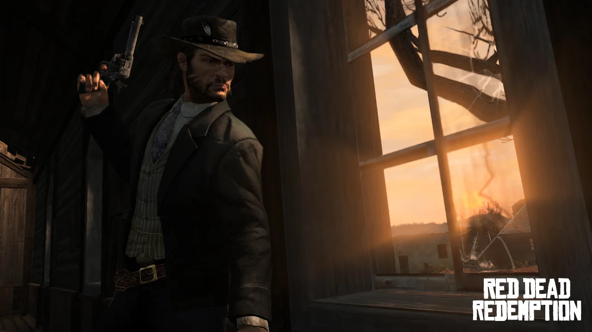
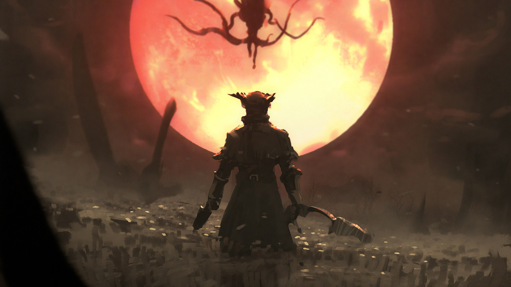
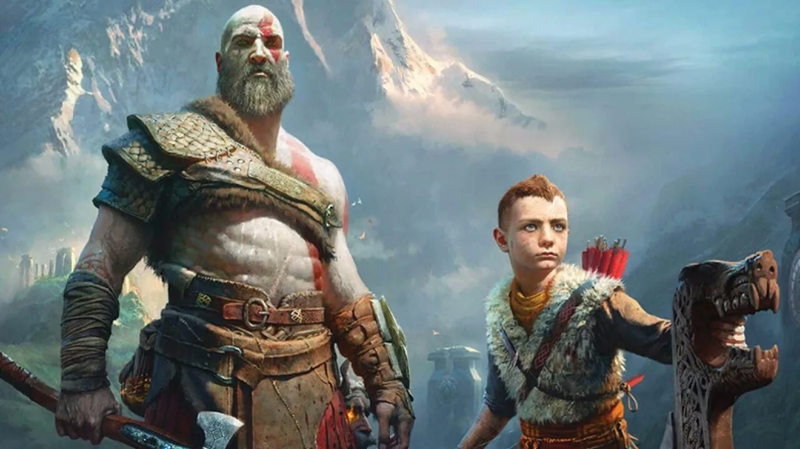
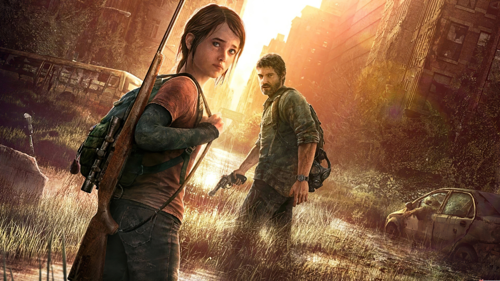

-
Elden Ring

Developed by FromSoftware, open-world RPG adventure set
in a ravaged place known as the Lands Between,
where the destruction of the titular artefact has led to wars and chaos.
You play a warrior tasked with restoring the ring and becoming ruler of a new kingdom. -
The Witcher 3: Wild Hunt

CD Projekt Red's open-world RPG is celebrated for its rich storytelling,
complex characters, and vast open-world filled with engaging quests. -
Red Dead Redemption 2
Rockstar Games' Western-themed action-adventure game
is lauded for its stunning visuals, compelling narrative, and detailed open-world setting. -
The Elder Scrolls V: Skyrim

Bethesda's epic fantasy RPG is known for its massive open-world,
freedom of choice, and endless exploration possibilities. -
Dark Souls

FromSoftware's action RPG is praised for its challenging gameplay,
atmospheric world, and deep lore that rewards perseverance and skill. -
Bloodborne
Another FromSoftware masterpiece, this action RPG
combines intense combat with a Gothic horror setting,
creating a unique and immersive experience. -
God of War (2018)
Santa Monica Studio's reimagining of the God of War series won
widespread acclaim for its emotional storytelling, stunning visuals, and character development. -
The Last of Us
Naughty Dog's post-apocalyptic action-adventure game
is celebrated for its emotional storytelling, memorable characters, and intense gameplay. -
Portal 2
Valve's puzzle-platformer captivated players with its innovative
gameplay mechanics, clever puzzles, and humorous writing. -
Half-Life 2

Valve's first-person shooter is renowned for its storytelling,
physics-based gameplay, and impactful narrative.